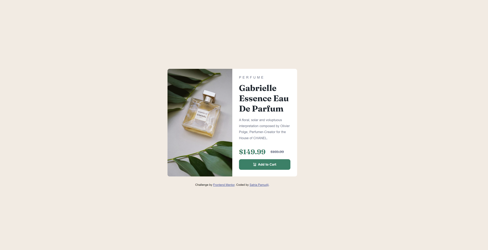
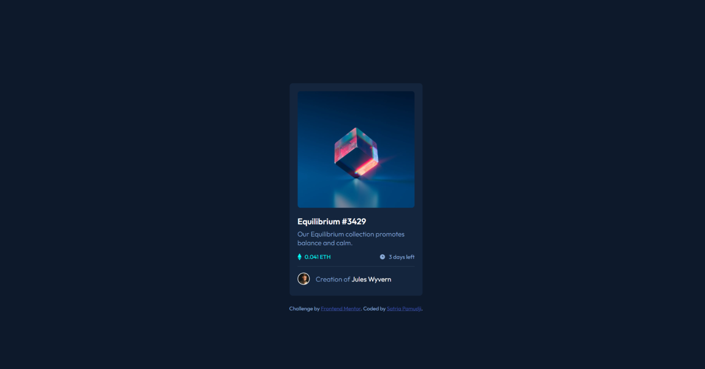

The first project required us to recreate a QR code page. This
beginner challenge allowed me to make use of my newly learnt
skills to built a real "website".

Challenge 2: Product Card
In this second challenge, we had to create a product preview
card component to make it look at close as the given product
images.

Challenge 3: NFT Card
In this challenge, we were supposed to re-create a NFT card
component. One of the challenges was with trying to center the
whole card.